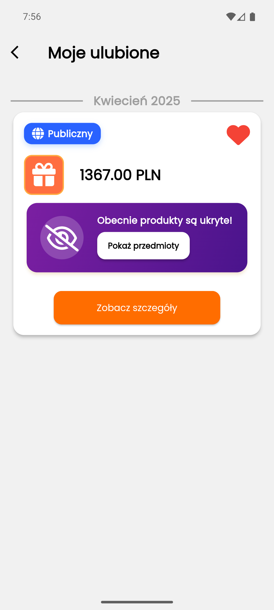

Dokumentacja widgetów (Flutter)
Wprowadzenie
W tej sekcji znajdziesz dokumentację widgetów użytych w aplikacji Flutter. Każdy widget jest opisany wraz z jego przeznaczeniem, lokalizacją w kodzie oraz zrzutem ekranu. Dokumentacja ta ma na celu ułatwienie zrozumienia struktury aplikacji i jej komponentów.
Strony
Strona powitalna
- Plik:
features/welcome_new_users/presentation/pages/introduction_page.dart - Zrzut ekranu:
-
Opis:
Strona powitalna dla nowych użytkowników, prowadząca przez proces rejestracji i weryfikacji numeru telefonu. -
Użyte widgety:
WelcomeStep:
Ekran powitalny z banerem, animacją Lottie oraz przyciskiem "Rozpocznij przygodę".NumberStep:
Formularz do wprowadzenia numeru telefonu, z walidacją i animacją Lottie.VerificationStep:
Ekran do wpisania kodu SMS, z polami na cyfry, obsługą timera i przyciskami do weryfikacji oraz ponownego wysłania kodu.SuccessStep:
Ekran końcowy informujący o sukcesie rejestracji.
Strona główna
- Plik:
features/mystery_box_discover/presentation/pages/home_page.dart - Zrzut ekranu:
-
Opis:
Główna strona aplikacji prezentująca użytkownikowi różne sekcje z ofertami i kategoriami. Zawiera m.in. baner promocyjny, sekcję dziennych boxów, ostatnio udostępnione boxy, kategorie oraz propozycje ponownych zamówień. Strona korzysta zCustomScrollViewi wielu własnych widgetów-sekcji. -
Użyte widgety:
CustomAppBar:
Niestandardowy pasek aplikacji z tłem i tytułem.DailyBoxesSection:
Sekcja prezentująca dzisiejsze boxy do odkrycia.PromotionHeader:
Baner promocyjny z animacjami Lottie i rozmytym tłem.SharedBoxesSection:
Sekcja z ostatnio udostępnionymi boxami przez innych użytkowników.HomeCategories:
Lista kategorii dostępnych boxów.MayLikeSection:
Propozycje boxów, które mogą zainteresować użytkownika.OrderAgainSection:
Sekcja z boxami, które użytkownik może zamówić ponownie.
Strona kreatora boxów
- Plik:
features/mystery_box_creator/presentation/pages/creator_start_page.dart - Zrzut ekranu:
-
Opis:
Strona umożliwiająca użytkownikowi rozpoczęcie procesu tworzenia własnego Mystery Boxa. Użytkownik wybiera typ boxa (np. profilowy, losowy, cykliczny, manualny), a następnie przechodzi przez kolejne kroki kreatora. Każdy typ boxa może mieć własny opis i ścieżkę tworzenia. -
Użyte widgety:
CreatorTitle:
Nagłówek strony kreatora z tytułem i krótkim opisem.CreatorTypes:
Lista dostępnych typów boxów do wyboru przez użytkownika.CreatorTypeCard:
Karta reprezentująca pojedynczy typ boxa, z ikoną, tytułem, opisem i opcjonalnym przyciskiem informacyjnym.CreatorProfileInfoPage:
Strona z informacjami o wybranym typie boxa oraz krokami procesu tworzenia.CreatorSteps:
Wizualizacja kroków procesu tworzenia boxa w formie osi czasu.CreatorTimelinePoint,CreatorTimelineDivider:
Elementy osi czasu używane wCreatorSteps.CreatorButton:
Przycisk powrotu do kreatora z ekranu informacyjnego.
Strona kreatora boxów Dla profilu
-
Opis:
Kreator boxów dla wybranego profilu użytkownika. Umożliwia przejście przez kolejne kroki: wybór profilu odbiorcy, okazji, budżetu, daty (lub cyklu) oraz podsumowanie. Każdy krok prezentowany jest jako osobny ekran wPageView. -
Użyte widgety:
StepIndicator:
Pasek postępu wyświetlający aktualny krok kreatora.RecipientStep:
Krok wyboru profilu odbiorcy boxa.OccasionStep:
Krok wyboru okazji (z listy lub własny opis).BudgetStep:
Krok wyboru budżetu (z listy lub własny).CycleStep:
Krok wyboru daty lub cykliczności (dla boxów cyklicznych).CheckStep:
Podsumowanie wszystkich wybranych opcji przed utworzeniem boxa.
Wybór profilu
- Plik:
features/mystery_box_creator/presentation/widgets/creator_profile_page/recipient_step.dart - Zrzut ekranu:
- Opis:
Pozwala wybrać istniejący profil odbiorcy lub dodać nowy profil. Wyświetla listę profili użytkownika z możliwością wyboru.
Wybór okazji
- Plik:
features/mystery_box_creator/presentation/widgets/creator_profile_page/occasion_step.dart - Zrzut ekranu:
- Opis:
Umożliwia wybór okazji z predefiniowanych kategorii lub wpisanie własnej okazji.
Wybór budżetu
- Plik:
features/mystery_box_creator/presentation/widgets/creator_profile_page/budget_step.dart - Zrzut ekranu:
- Opis:
Pozwala określić budżet boxa – z listy lub wpisując własną wartość.
Wybór daty
- Plik:
features/mystery_box_creator/presentation/widgets/creator_profile_page/cycle_step.dart - Zrzut ekranu:
- Opis:
Pozwala wybrać datę realizacji boxa.
Podsumowanie
- Plik:
features/mystery_box_creator/presentation/widgets/creator_profile_page/check_step.dart - Zrzut ekranu:
- Opis:
Podsumowanie wszystkich wybranych opcji. Użytkownik może zatwierdzić utworzenie boxa.
Strona kreatora boxów Losowy
- Opis:
Kreator boxów losowych, gdzie model AI decyduje o parametrach i finalnej zawartości boxa, bez ingerencji użytkownika. Użytkownik wybiera tę opcję na stronie startowej kreatora, a następnie wyświetlany jest ekran ładowania i po chwili podsumowanie wygenerowanego boxa. - Użyte widgety:
CustomLoadingScreen:
Ekran ładowania z animacją i komunikatem o generowaniu boxa przez AI.MysteryBoxSummaryScreen:
Podsumowanie wygenerowanego boxa (zawartość, cena, szczegóły).
Strona kreatora boxów Cykliczny
- Opis:
Kreator boxów cyklicznych, gdzie użytkownik ustawia cykl (np. co miesiąc) i AI generuje boxy automatycznie na podstawie profilu i budżetu. Większość kroków jest identyczna jak w kreatorze "Dla profilu" (patrz wyżej), z wyjątkiem kroku wyboru daty, gdzie pojawia się dodatkowa opcja wyboru częstotliwości cyklu. - Użyte widgety:
- Analogiczne widgety jak w kreatorze "Dla profilu"
CycleFrequencyWidgets:
Pozwala wybrać częstotliwość cyklu (np. co tydzień, miesiąc, rok).
Wybór profilu
Analogiczne jak w kreatorze "Dla profilu"
Wybór okazji
Analogiczne jak w kreatorze "Dla profilu"
Wybór budżetu
Analogiczne jak w kreatorze "Dla profilu"
Wybór cyklu
- Plik:
features/mystery_box_creator/presentation/widgets/creator_profile_page/cycle_step.dart - Zrzut ekranu:
- Opis: Umożliwia wybór częstotliwości cyklu boxa (np. co tydzień, miesiąc, rok) oraz daty pierwszego boxa.
Podsumowanie
- Plik:
features/mystery_box_creator/presentation/widgets/creator_profile_page/check_step.dart - Zrzut ekranu:

- Opis: Podsumowanie wszystkich wybranych opcji cyklicznego boxa.
Strona kreatora boxów Manualny
- Opis: Funkcjonalność nie jest jeszcze zaimplementowana, powiadamia użytkownika o dostępności w przyszłości.
Strona centrum użytkownika
- Plik:
features/user_center/presentation/pages/center_page.dart - Zrzut ekranu:
-
Opis:
Strona centrum użytkownika, gdzie użytkownik może zarządzać swoimi profilami, boxami, zamówieniami, ulubionymi, nadchodzącymi boxami, ustawieniami, kontem oraz uzyskać informacje o aplikacji. Zawiera sekcje tematyczne z listami opcji oraz przyciskiem wylogowania. -
Użyte widgety:
CustomAppBar:
Pasek nagłówka z tłem i tytułem sekcji centrum użytkownika.CenterSection:
Nagłówek sekcji tematycznej (np. "Moje boxy", "Ustawienia", "Konto", "O nas").CenterBoxesList:
Lista kafelków nawigacyjnych do podstron związanych z boxami/profilami/zamówieniami/ulubionymi/nadchodzącymi boxami.CenterSettingsList:
Lista kafelków do ustawień aplikacji.CenterAccountList:
Lista kafelków do zarządzania kontem (np. czyszczenie danych, zamknięcie konta).CenterAboutList:
Lista kafelków z informacjami o aplikacji i twórcach.LogoutButton:
Przycisk wylogowania użytkownika z aplikacji.
Strona centrum Moje profile
- Plik:
features/user_center/presentation/pages/my_profiles_page.dart - Zrzut ekranu:
- Opis:
Pozwala zarządzać profilami użytkownika – przeglądać, edytować, usuwać i dodawać nowe profile. Każdy profil prezentowany jest w formie karty z informacjami i przyciskami akcji. - Użyte widgety:
ProfileWidget:
Karta prezentująca pojedynczy profil użytkownika.SummaryBanner:
Baner z przyciskiem do dodania nowego profilu.
Strona centrum Moje boxy
- Plik:
features/user_center/presentation/pages/my_boxes_page.dart - Zrzut ekranu:
- Opis:
Lista wszystkich boxów utworzonych przez użytkownika. Pozwala przeglądać szczegóły, usuwać boxy oraz zobaczyć ich zawartość. - Użyte widgety:
MysteryBoxWidget:
Karta prezentująca pojedynczy box użytkownika.
Strona centrum Moje zamówienia
- Plik:
features/user_center/presentation/pages/my_orders_page.dart - Zrzut ekranu:
- Opis:
Historia zamówień użytkownika z podziałem na statusy (oczekujące, zrealizowane, anulowane). Pozwala przeglądać szczegóły zamówień i ponawiać zamówienia. - Użyte widgety:
OrderCard:
Karta prezentująca pojedyncze zamówienie.
Strona centrum Moje ulubione
- Plik:
features/user_center/presentation/pages/favorites_page.dart - Zrzut ekranu:
 - Opis:
Lista boxów polubionych przez użytkownika. Pozwala szybko przejść do szczegółów wybranego boxa. - Użyte widgety:
MysteryBoxWidget:
Karta prezentująca polubiony box.
Strona centrum Nadchodzące boxy
- Plik:
features/user_center/presentation/pages/upcoming_boxes_page.dart - Zrzut ekranu:
- Opis:
Lista boxów, które mają zostać dostarczone w przyszłości (np. boxy cykliczne). - Użyte widgety:
MysteryBoxWidget:
Karta prezentująca nadchodzący box.
Strona centrum Moje ustawienia
- Plik:
features/user_center/presentation/pages/settings_page.dart - Zrzut ekranu:
- Opis:
Ustawienia aplikacji, w tym motyw, preferencje i informacje o aplikacji. - Użyte widgety:
AppThemeWidget:
Zmiana motywu aplikacji.PreferencesWidget:
Preferencje użytkownika.InfoWidget:
Informacje o aplikacji.
Strona centrum Wyczyść wszystkie dane
- Opis:
Opcja umożliwiająca wyczyszczenie wszystkich danych użytkownika z aplikacji (funkcjonalność do zaimplementowania). - Użyte widgety:
CenterTile:
Kafelek akcji.
Strona centrum Zamknij konto
- Opis:
Opcja umożliwiająca zamknięcie konta użytkownika (funkcjonalność do zaimplementowania). - Użyte widgety:
CenterTile:
Kafelek akcji.
Strona centrum Informacje o nas
- Plik:
features/user_center/presentation/pages/info_page.dart - Zrzut ekranu:
- Opis:
Strona z informacjami o twórcach aplikacji, misji projektu oraz cytatem motywacyjnym. - Użyte widgety:
BannerSection:
Baner z logo i nagłówkiem.InfoSection:
Sekcja z informacjami o zespole i misji.InfoQuote:
Cytat motywacyjny.
Podsumowanie widgetów
| Nazwa widgetu | Opis |
|---|---|
| WelcomeStep | Ekran powitalny z animacją i przyciskiem startu. |
| NumberStep | Formularz do wprowadzenia numeru telefonu. |
| VerificationStep | Weryfikacja kodu SMS, pola na cyfry, obsługa timera. |
| SuccessStep | Ekran sukcesu po rejestracji. |
| CustomAppBar | Pasek nagłówka z tłem, obrazem i tytułem. |
| DailyBoxesSection | Sekcja z dzisiejszymi boxami do odkrycia. |
| PromotionHeader | Baner promocyjny z animacjami Lottie. |
| SharedBoxesSection | Sekcja z ostatnio udostępnionymi boxami. |
| HomeCategories | Lista kategorii boxów. |
| MayLikeSection | Propozycje boxów dla użytkownika. |
| OrderAgainSection | Sekcja z boxami do ponownego zamówienia. |
| CreatorTitle | Nagłówek kreatora boxów. |
| CreatorTypes | Lista typów boxów do wyboru. |
| CreatorTypeCard | Karta pojedynczego typu boxa. |
| CreatorProfileInfoPage | Strona z informacjami o typie boxa i krokach kreatora. |
| CreatorSteps | Oś czasu z krokami kreatora boxów. |
| CreatorTimelinePoint | Punkt na osi czasu kreatora. |
| CreatorTimelineDivider | Separator osi czasu kreatora. |
| CreatorButton | Przycisk powrotu z ekranu informacyjnego kreatora. |
| StepIndicator | Pasek postępu w kreatorze boxów. |
| RecipientStep | Krok wyboru profilu odbiorcy boxa. |
| OccasionStep | Krok wyboru okazji. |
| BudgetStep | Krok wyboru budżetu. |
| CycleStep | Krok wyboru daty lub cyklu. |
| CycleFrequencyWidgets | Wybór częstotliwości cyklu dla boxów cyklicznych. |
| CheckStep | Podsumowanie wyborów w kreatorze boxów. |
| SummaryBanner | Baner podsumowujący z ikoną i opisem. |
| SummaryItems | Lista produktów w boxie z opcją usuwania. |
| SummaryButtons | Przycisk akcji w podsumowaniu boxa. |
| SummaryPrice | Wyświetlanie ceny boxa. |
| MysteryBoxWidget | Karta prezentująca box użytkownika. |
| OrderCard | Karta prezentująca zamówienie użytkownika. |
| ProfileWidget | Karta prezentująca profil użytkownika. |
| ProfileInfoPage | Szczegóły i edycja profilu użytkownika. |
| NewProfilePage | Formularz tworzenia nowego profilu. |
| CenterSection | Nagłówek sekcji w centrum użytkownika. |
| CenterBoxesList | Lista kafelków do podstron związanych z boxami/profilami/zamówieniami. |
| CenterSettingsList | Lista kafelków do ustawień aplikacji. |
| CenterAccountList | Lista kafelków do zarządzania kontem. |
| CenterAboutList | Lista kafelków z informacjami o aplikacji. |
| CenterTile | Kafelek nawigacyjny/akcji w centrum użytkownika. |
| LogoutButton | Przycisk wylogowania użytkownika. |
| AppThemeWidget | Zmiana motywu aplikacji. |
| PreferencesWidget | Preferencje użytkownika. |
| InfoWidget | Informacje o aplikacji w ustawieniach. |
| BannerSection | Baner z logo i nagłówkiem na stronie "O nas". |
| InfoSection | Sekcja z informacjami o zespole i misji. |
| InfoQuote | Cytat motywacyjny na stronie "O nas". |